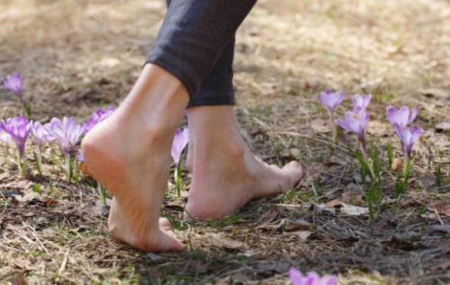
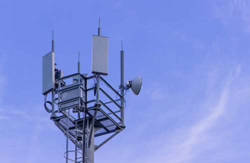
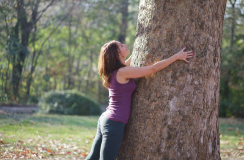

Plug Into “The Earth’s Heartbeat” & Experience A Long List of Health Benefits
It sounds absurd… but the act of taking off your shoes and connecting to the earth has incredible (medically recognized) health benefits.

‘Earthing’, also known as ‘grounding’ is the process of connecting to the Schumann Resonance.
The Schumann resonance is a frequency that our planet emits.
7.83Hz is the natural frequency of the Earth. Some people call it “the Earth’s heartbeat,” and every living thing on the planet has evolved to depend on it.
It is by no co-incidence that 7.83Hz is also the dominant brainwave rhythm of humans and all other mammals.
Unfortunately, modern living is drowning out this natural frequency.
Rubber insulates against electricity. When synthetic rubber soles were invented, nobody foresaw the side-effects of losing our electrical ground from the Earth.
As synthetic soles and rubber carpet underlay became mainstream, rare health disorders began to become more common… Now, cancer, heart disease, and auto-immune diseases are the biggest killers of all.
We Are Electrical Beings
Every cell in the body functions electrically.
The most abundant protein in the body is collagen. It’s the building block of our tissues. Collagen molecules live inside a conductive gel located all over the body.
Our brain, heart, and nervous system are all electrically driven…
Every bodily function, whether it’s physical or mental, is powered by low levels of electrical current.
All the elements in our bodies such as; oxygen, sodium, potassium, calcium, and magnesium have a specific electrical charge. How those molecules are bound together and how they react to the other molecules near them is how chemicals create electricity.
We Live On A Giant Battery
The surface of the Earth is charged negatively, and the ionosphere (60mph from the ground to the sky) is charged positively.
The sun spews out electrons, they hit and charge the ionosphere, and this causes frequent lightning (up to 100 lightning strikes per second around the globe).
This electrical charge is transferred to the surface of the Earth (the Schumann resonance).
So, whenever you are walking barefoot on the Earth… essentially, you’re collecting electrons that came from the sun. And as you read on, you’ll discover that these electrons are natural antioxidants that support your body down to a cellular level.
Proof We Need “The Earth’s Heartbeat”
Professor R. Wever from the Max Planck Institute for Behavioural Physiology built an underground bunker that completely screened out the Schumann resonance. Student volunteers lived there for four weeks in this hermetically sealed environment.
Professor Wever noted that the student’s circadian rhythms diverged and that they suffered emotional distress and migraine headaches. As they were young and healthy, no serious health conditions arose… which wouldn’t have been the case with older people or people with a weaker immune system.
After only a brief exposure to 7.8 Hz (the very frequency which had been screened out), the volunteer’s health stabilized again.
It was this study that lead to the cure of “space sickness” – a feeling of nausea and headaches that early astronauts had been complaining about. To fix this, artificial Schumann resonators were installed into every spacecraft and still are to this day.
Bathing In Electromagnetic Radiation

EMF stands for electromagnetic field.
We are all immersed in EMF radiation.
From WIFI signals, cell phone towers, household appliances, to the phone we constantly carry around and sleep beside… there is now concern that we absorb tremendous amounts of electromagnetic radiation from our modern devices.
This disturbs our fine electrical balance.
Without earthing, our body becomes electrically charged (up to 20 volts) and is unable to release this charge because we are constantly insulated from the ground.
The Root Cause Of Disease
Modern biomedicine has discovered that many of the most debilitating diseases, as well as the aging process itself, are caused by or associated with chronic inflammation and oxidative stress.
Emerging research has revealed that direct physical contact with the surface of the planet generates a kind of electric nutrition, with surprisingly potent and rapid anti-inflammatory and antioxidant effects.
Inflammation is a part of the body’s natural healing process, but it’s only when the inflammatory process becomes excessive that problems arise.
Inflammation causes high levels of free radicals that flood the body.
Without getting too technical, free radicals steal an electron from healthy cells; causing oxidation.
Inflammation causes oxidation, and oxidation causes inflammation… this harmful cycle is what’s known as chronic inflammation.
Harvard researchers confirm that chronic inflammation is widely believed to be the root cause of most debilitating diseases including cancer, metabolic disease, and auto-immune diseases.
Earthing neutralizes chronic inflammation by giving the free radicals the electron they need… stopping them from stealing electrons from healthy cells. This prevents oxidation and the diseases that it causes.
Plugging Premature Babies Into The Earth
Modern-day humans are prone to stress… this releases a stress hormone called cortisol.
In small amounts, cortisol serves its purpose… but when we are constantly stressed out, the high levels of cortisol cause inflammation.
Premature babies are in a constant state of stress because they should still be in their mother’s womb.
Babies born at 37 weeks or earlier have underdeveloped organs and can easily develop serious diseases due to inflammation (caused by stress).
Researchers at the Pennsylvania State University Children’s Hospital discovered that grounding premature babies strongly increased heart rate variability (HRV), and improved organ development, including the lungs, heart, and intestines.
Dozens Of Medical Journals Report Relief For A Long List Of Ailments
Research published in the Journal of Environmental and Public Health has revealed that grounding or earthing produces intriguing effects on our health.
Grounding has been proven treatment for:
- Fibromyalgia relief
- Normalized blood pressure
- Neutralize Inflammation
- Normalizes the day–night cortisol rhythm
- Improve sleep/treats insomnia
- Reduced pain
- Reduced stress
- Reduces blood viscosity (a major factor in cardiovascular disease)
- Shifts the autonomic nervous system from sympathetic toward parasympathetic activation
- Increases heart rate variability
- Accelerated healing
A summary has been published in the Journal of Environmental and Public Health. https://www.ncbi.nlm.nih.gov/pmc/articles/PMC4378297/
http://alternative-therapies.com/openaccess/26-6_Elkin.pdf
Grounding Elevates Mood
A recent study published at the National Center for Biotechnology Information tested 40 adult participants who were either grounded or sham-grounded (no grounding) for 1 hour while relaxing with an earthing pillow, mat, and patches connecting them to the ground.
This study was double-blinded and the Brief Mood Introspection Scale (comprising 4 mood scales) was used.
Pleasant and positive moods statistically significantly improved among grounded-but not sham-grounded-participants.
It is concluded that the 1-hour contact with the Schumann resonance improved mood substantially more than relaxation alone.
How To Experience Earthing/Grounding For Yourself
It’s so easy to re-connect with the Earth and absorb the Schumann resonance.
Once you’ve experienced how it recharges you, you’ll forever make an effort to re-connect to Mother Earth.
Simply take off your shoes and spend as much time as you can with your feet connected to the ground. Leave your phone or any other electrical devices at home (or in the car), and try to get away from powerlines and cellphone towers.
Walking on wet grass or wet sand is especially effective since water is such a great conductor of electricity.
Some people who don’t have time to connect with nature use Earthing bedsheets.
Earthing bedsheets are just like regular bedsheets except they’re attached to a copper wire that plugs into the grounding hole of your electrical socket… this health pro-tip is like spending 8 hours with your feet in wet sand (particularly good for people who suffer from insomnia).
Swimming in the sea, sitting under a tree, sunbaking on a giant rock (granite is a great conductor), it doesn’t matter how you do it. The longer you’re able to connect nature with your bare skin, the better you’ll feel.
